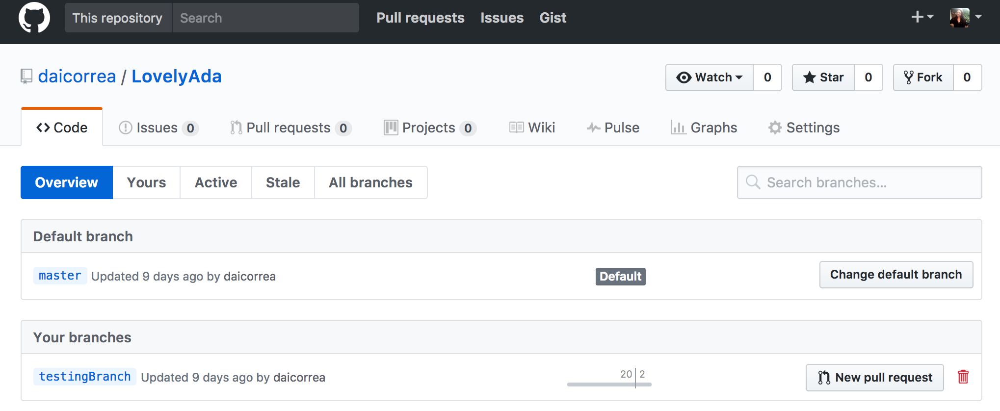
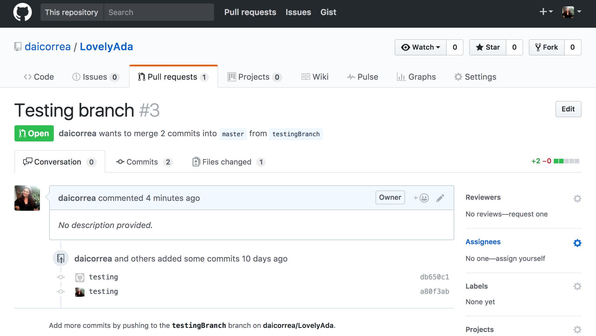
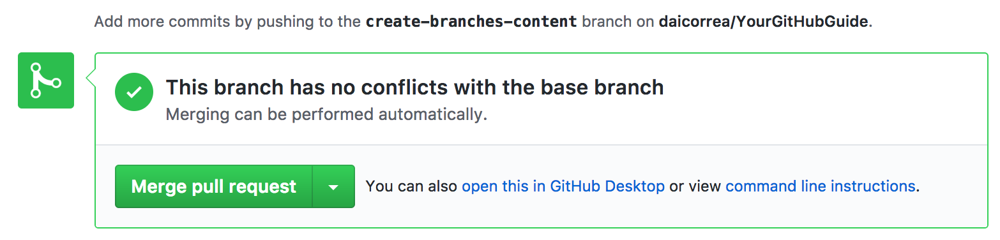
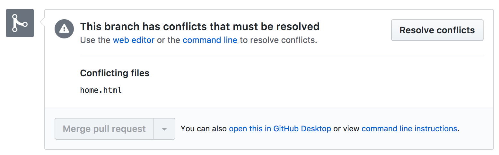
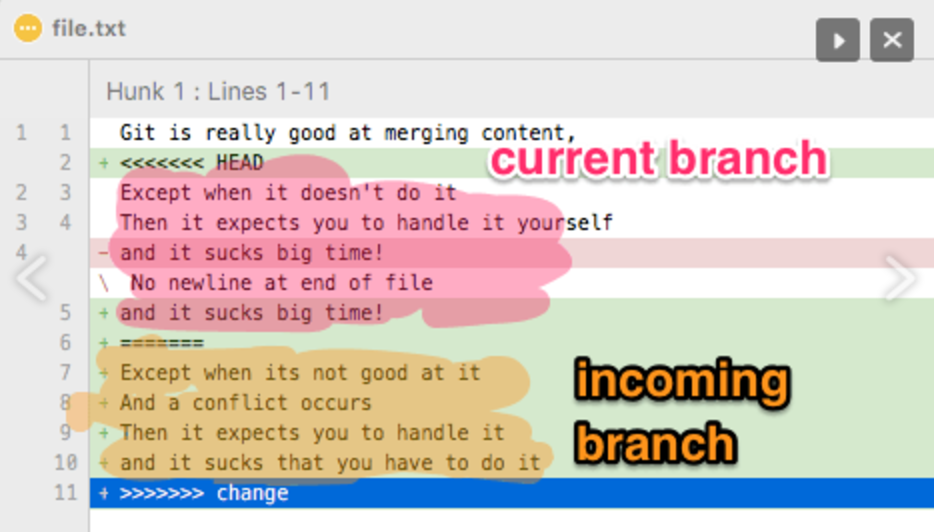

A branch is an idependent line of development. The main branch in git is called Master. You can create how many branches your team thinks it's necessary for the project.
But why create a branch if you can send your code directly to the master?
Usually branches are used for new features, improvements or even bug fixes in some cases. It also helps with conflicts when one or more people are editing the same code.
The code you use in a branch is completely different from other branches.
Let's start with an example when the project already have some commits (C0 = Commit 0; C1 = Commit1, ...)
The fastest way to create a new branch is to use the following command line:
$ git checkout -b [branch-name]
This is equivalent of using two other commands:
$ git branch -f [branch-name]
$ git checkout [branch-name]
The first command creates a new branch. The second one "enters" into a new branch. This means that your code will be the one that was last saved into the new branch.
Let's create a new branch called "iss53":
$ git checkout -b iss53
To start the branch will copy the code from the Master. We will have an environment similar to this one:
Now Let's say you change something and make a new commit:
$ git commit -am 'Added a new footer'
This means that our branch iss53 will be one commit ahead (C3 - Commit 3) of our master.
What if you have another issue to change that is more important that the one you are currectly working with on your branch iss53? Even if your work on branch iss53 is incomplete, you can create a new branch from the Master for the new issue and go back to iss53 later to continue your code.
First we have to change to the Master branch:
$ git checkout master
Then we create a new branch called hotfix:
$ git checkout -b hotfix
After that we make the changes we needed and commit our changes:
$ git commit -am 'fixed the broken feature'
Our git will have a network like this now:
When pushing into a branch, don't forget to put the name of the branch. Ex:
$ git push origin hotfix
If you are working with a team and creating a new feature you can open a Pull Request to mean that you finished the code in the branch (a new feature, a bug fix, ...) and it can be tested and if it's okay, it can be joined with the Master's code. This can add to group discussions about changes that can be made to improve the code or just an approval of the code.
To open a pull request, go to the branches tab on your project's page and in the line of your branch, you can click on the "New Pull Request" button.

A new page with the pull request will be creating and you can access all the pull requests you have on the project in the "Pull Request" tab in your project.

You can still create commits after you create the Pull Request.
There are two possible messages of a Pull Request. When there are no conflicts in the code you have in this branch with the maste you will have:

If there's a conflict, then you will need to resolve the conflicts in the code before joining the code with the Master's code. If that happens you will find the following message:

To start merging your code you can use the line:
$ git merge [name-of-the-branch-you-want-to-merge]
When you use a merge and has conflicts, you will see the following format in your code:

The red part is what you have in your current Branch and the yellow code is the one that was in the same place in the code you want to merge. In this case the text was altered a little bit so you can choose which one you want to keep and which one you want to erase. Not forgeting to erase the Git tags "<<<<<< HEAD", "====" and ">>>>".
If you have no conflicts in your branch, you can simply click on the "Merge Pull Request" button.
Another option is using the command line. For this, let's go back to our example from before. We created the hotfix branch and created a new commit. The pull request was oppened and the code was tested. Now we want to merge the code into the master code. Firstly, we need to go out of the hotfix branch and go to the master.
$ git checkout master
Then we want to merge the hotfix branch.
$ git merge hotfix
Now that we merged, our Master branch will point to the C4 commit, having the same code as hotfix.
After merging, you can erase the branch if you want. You can also go back on working in the iss53 branch but remember that the new code that was in the C4 commit won't be in the branch unless you merge them.